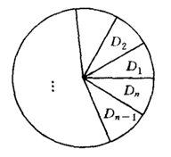
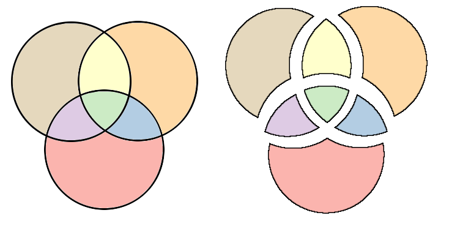
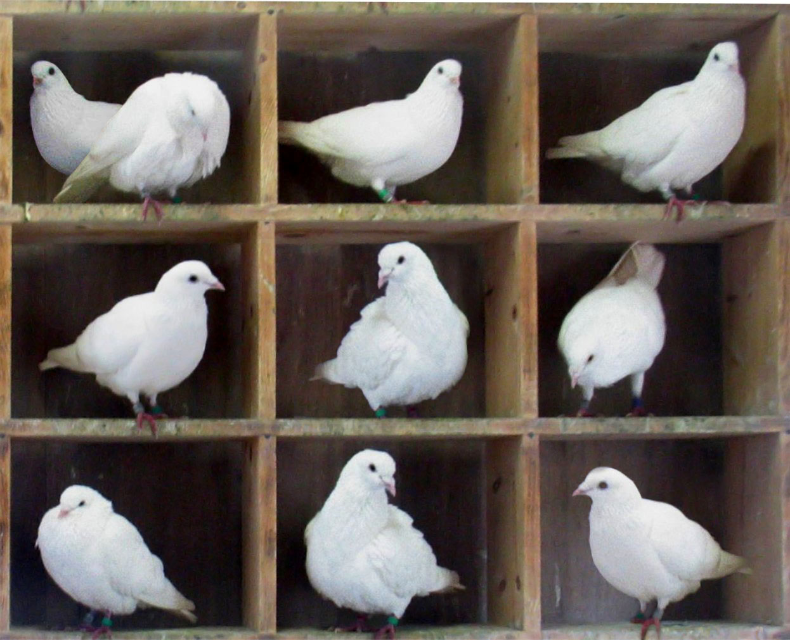
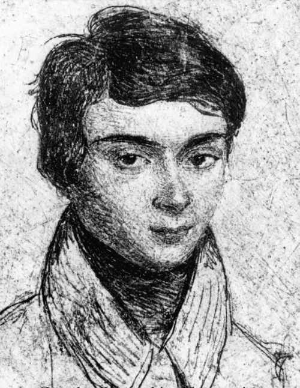
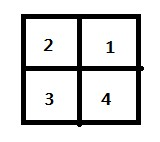
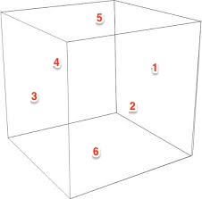
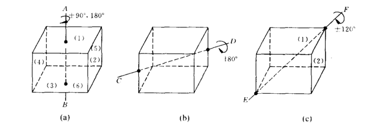
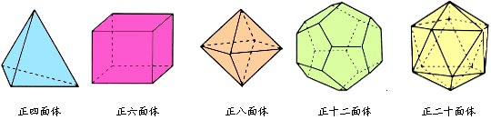

Combinatorial Mathematics Cookbook (II)
400 Words | Approximately 2 Minutes Read | Last Modified on September 28, 2018
组合数学Cookbook（下）
5. 退一步海阔天空之递推关系
前面介绍的母函数方法是从正面迎击敌人，把所有的可能囊括其中，一次性解决问题，快准狠。但是另一方面，我们也看到，在小球模型中，虽然得到了相应的母函数表达式，但是怎么展开得到想要的相应项的系数，这是一个令人捉急的问题，顿时有种面对超越方程一般的无奈（自己太弱）。
那么，有没有一种非 一口吃一个胖子 的方法呢？是否能把一个宏大的问题进行切分模块化，然后逐步求解最终解决整个问题的方法呢？很显然，肯定是有的，这就是我们下面要介绍的递推方法。我们将用两个浅(jing)显(dian)的例子来阐述这种思想。
先来一道出自《编程之美》的原题简化版。
Q1: 现在有两种砖块，分别为 $1\times1$ 和 $1\times2$ ，如果要用这两种砖块铺一个 $1\times N$ 的地面， 一共有几种方案？
母函数在这面前也露出了难色，由于 $1\times 2$的砖是不能拆开的，因此无法直接用指数型母函数，另外一个难点是用的砖数根本无法确定，仅仅知道长度为N远远不够。那么，我们能不能用Divide and conquer的办法把这个问题的规模缩小呢。
假设规模为n的问题最终的方案数为$a_n$，对于所有可行的方案集$S_0$，如果考虑最后一块砖的话，无非有两种情况，第一种情况是 $1\times 1$，我们将其方案集记成$S_1$；另一种情况是 $1\times2$ ，我们将其方案集记成$S_2$。不难想到，这三个方案集满足一下的关系：
$$|S_0|=|S_1|+|S_2|$$
下面要考虑的是，这三个方案集的元素个数和方案数$a_n$有啥关系。 - 对于$S_0$，易知其元素个数$|S_0|$就是所求的方案数$a_n$
对于
$S_1$，刨去最后一块 $1\times1$ 的砖，长度变为$n-1$，于是其元素个数$|S_1|$为$a_{n-1}$对于
$S_2$，刨去最后一块$1\times2$ 的砖，长度变为$n-2$，于是其元素个数$|S_2|$为$a_{n-2}$
综上可以自然而然地得到地推关系：
$$a_n = a_{n-1}+a_{n-2}$$
不觉得这个递推很熟悉吗，脑海中没有顿时蹦出一只只鲜活的小兔子吗？对，这就是斐波那契数列的递推式，这是一个线性齐次常系数的递推关系，求解方法已经非常成熟。直接写出其特征方程：
$$x^2=x+1$$
求得两个根为 $$\alpha=\frac{1+\sqrt{5}}{2}$$ $$\beta=\frac{1-\sqrt{5}}{2}$$
因此可以直接写出通解的形式：
$$a_n=A\alpha^n+B\beta^n$$
又由初项$a_1=1$和$a_2=2$，可以确定出A和B的值，然后再代入通解表达式，最终可得：
$$a_n=\frac{2}{\sqrt{5}}(\alpha^{n+1}-\beta^{n+1})$$
这是不是非常的奇妙的求解过程？和母函数的感觉完全不一样。嗯，就是这种feel…乘胜追击，我们再看一题：
Q2: 一个圆域， 依圆心等分为n个部分，用k种颜色对这n个域进行涂色，要求相邻的域不同色，试问有多少种涂色方案？

假设$a_n$为n个域涂k种颜色的方案数，其中每个域为$D_i, i=1,2,…,n$，那么如果关注$D1$和$D{n-1}$的涂色情况，不难发现无非两种：$D1$和$D{n-1}$的颜色一致，或者颜色不一致。
- 对于颜色一致的情况，可以首先让$D_n$取不同于$D1$与$D{n-1}$的其他$k-1$种颜色中的任意一种，然后把$D1$，$D{n}$和$D{n-1}$合并为一种颜色，这样就剩下了$k-2$个域，而这个时候恰好变成了规模为$k-2$的子问题。因此这种情况下的方案数为$(k-1)a{n-2}$
- 对于颜色不一致的情况，可以首先让$D_n$取不同于$D1$与$D{n-1}$的其他$k-2$种颜色中的任意一种，另外由于已经知道$D1$和$D{n-1}$的颜色不一致，因此可以直接把剩下刨去$Dn$的$k-1$个域看成规模为$k-1$的子问题。因此这种情况下的方案数为$(k-2)a{n-1}$
综上可以列出最终的递推关系为：
$$a_n=(k-1)a_{n-2}+(k-2)a_{n-1}$$
又知道$a_2=k(k-1)$以及$a_3=k(k-1)(k-2)$，因此可以用前面介绍的方法进行求解。
出拳必先收势，上跳必先下蹲，有时候，解组合数学问题就像人生一样，退一步，往往能看到别样的风景…
###6. 欲擒故纵之容斥原理
前面介绍了递推方法，是把一个原始问题以树状的方式竖直展开，直到叶子节点，再慢慢回溯，得到原始问题的解。这节将介绍一种同样间接求解原始问题的方法，但是却是以类似水平的方式展开原始问题，通过加减的交替出现把原始问题给慢慢圈出来，这就是容斥原理
首先看一个简单的例子有个直观的感受，盗一张图： 
Q3: 请问上面三个圆围成的图形的面积是多少？
首先Brute force的方法是把围成的图形大卸八块，变成右边的图形，然后依次算出每一小块的面积，然后求和就能得到原始图形的面积。当这三个圆是蛋糕的时候，这么做固然无可非议，说不准还没被表扬切蛋糕水平高超，但是如果这三个圆是水泥灌筑而成呢？再这么切真的好么…总的来说，这么做的最大的缺点是把原来规则的图形完全打散了，计算和表达起来非常的不方便。那么，有其他更好的方法吗？（废话，当然有，否则就不举这个栗子了）
受前面切块的启发，我们想，能不能不切那么细致呀，我可以把碎块适当地拼起来，变成规则一点好看一点的整体，比如说，在上述的右图中，把黄色和绿色拼起来，得到一个种子一样形状的整体，同理可以拼出另外两个“种子”。把三个种子的面积加起来，中间多算的地方再减去就好了。于是，顺着这个思路，我们得到了一下求解方法。
设三个圆的面积分别为$S_1$，$S_2$ 和 $S_3$，围成的总面积为 $S$，显然 $$S \neq S_1 + S_2 + S_3$$ 中间两两交叠的地方多加了，那就减去吧：
$$S_1+S_2+S_3-S_1 \cap S_2-S_2\cap S_3-S_1\cap S_3$$
这回对了吗？仔细一想不对，中间的绿色部分减多了一次，得补回来，于是最后得到如下表达式：
$$S=S_1+S_2+S_3-S_1 \cap S_2-S_2\cap S_3-S_1\cap S_3+S_1\cap S_2\cap S_3$$
看上面一加一减的方法就是传说中的容斥原理，具体的证明和具体的一般表达式在此就不详细推导了，大家只需要知道求N个集合的并的时候，只需要首先将每个集合元素个数相加，然后减去两两相交的集合元素个数，再加上所有三个相交的集合元素个数，依次类推，直到最后一项为所有N个集合的交集的元素个数。
有了基本的概念，那么下面我们看另外一道稍难却更有意思的题： >Q4: 在某一期的《爸爸去哪儿》节目里面（就不告诉你是哪一期），出现了N对爸爸和小盆友，现在进行一个游戏。所有小盆友站在中间，爸爸们围成一圈并且蒙上眼睛，爸爸们的任务是找到自己的小盆友，并且不能有任何的信息交流，请问最终没有一个爸爸找到自己家小盆友的方案有多少种？
是的，这就是一个典型的错排问题，固然可以用高端的棋盘多项式进行求解，但是一种更为高效的方法就是这节刚介绍的容斥原理。
首先要设出基本的方案集，不妨就设$A_i$为第$i$个爸爸找到了自己的小盆友的方案集，那么，由于只是约束了第$i$个爸爸的情况，剩下的$N-1$个爸爸都没有约束，因此不难得到： $$|A_i|=(n-1)!$$ 同理可以得到： $$|A_i\cap A_j|=(n-2)!, i \neq j$$ 以此类推，最终不难知道所有爸爸都找不到自己小盆友的方案数$D_n$为： $$D_n=|\overline{A_1}\cap\overline{A_2}\cap…\cap\overline{A_n}|=|U|-|A_1 \cup A_2 \cup…\cup A_n|$$
后面那项不就是前面说的N个集合的并嘛，于是我们很高兴地写出来下面的式子：
$$|A_1 \cup A_2 \cup…\cup A_n|=C(n,1)(n-1)!-C(n,2)(n-2)!+…\pm C(n,n)1!$$
代入化简后得到： $$D_n=n!(1- \frac{1}{1!}+\frac{1}{2!}+…\pm\frac{1}{n!})$$
问题就这么解决了，就是不停地多退少补，慢慢地收敛到了最终的方案全集上，简直比母函数更加无脑。总的来说，容斥原理就适用于可以将原始问题拆解为若干子问题的否命题的逻辑与的问题，具体来说，就是指那些正面求解很难，却可以很容易的把每个子问题的否命题求出来，然后这些否命题进行逻辑与就是原始问题的解的问题。再看一栗：
Q5: 500以内不能被3，5和7整除的正整数有哪些？
正面求解比较麻烦，但是子命题的否命题如能被3整除的数，能被5整除的数，能被7整除的数却比较好求，这样就把原始问题做了反面拆分，得到表达式后再用德摩根定理把原始问题规约为N个集合取并集的问题，原始问题便迎刃而解了。
转化完成后，接下来的步骤，直接撸就行，不解释…
###7. 和鸽子有个约会之鸽巢原理 和平鸽是和平的象征，对于热爱和平的我们来说，怎么能不好好研究鸽子呢，既然要研究鸽子，必须先找到鸽子，哪里鸽子最多，当然是鸽子住的地方啦。于是顺着以上强盗逻辑，我们鸽子的紫禁城(图片来自Wiki)：
{kind=link}

10只鸽子，9雄1雌，某天晚上，9只雄鸽怀着焦虑的心情等着族群唯一的雌性小A翻牌，结果小A翅膀一抖，1号男宠欣喜若狂，2号男宠面有难色。于是当天晚上，小A扑哧扑哧地飞到了1号鸽笼，和1号男宠共度良宵，一段温馨美好的回忆就此展开。但是…等等…等等…事情的发展其实还可以这样，其实当天是2号男宠被翻牌，略有难色是因为他的真爱是他——帅气的1号男宠，但是囿于小A的淫威，于是面色略微难堪，1号男宠欣喜若狂是因为他知道2号男宠晚上一定会来找他，在小A和1号男宠面前，2号男宠毅然决然地选择了1号男宠，于是我们看到了当晚2号鸽笼里那只高傲却若有所失的脚上系了绿色丝带的小A…..
抱歉扯远了，无论真实情况是哪一种，当天晚上肯定会有1个鸽笼有2只鸽子，这个就是本节的重点鸽巢原理。说白了，其实就被逼无奈走投无路做出的选择，公式化描述如下：
m只鸽子，n个鸽巢，则至少有一个鸽巢里面有$\lceil \frac{m}{n} \rceil$只鸽子
这个原理本身非常直观，但是如果变成实际题目，则往往一入侯门深似海，找到恰当的构造方法是解决问题的关键，这个就是数学的魅力之一——无中生有。
证明就像写论文一样，你得找到一个恰当的切入点，适合的题设和模型，然后再把原始问题规约到你提出的框架里面，然后按照逻辑的力量自然推导下去，真相慢慢就浮出了水面。下面先吃一栗。
Q6: 从1到2n的2n个整数中任取n+1个，则这n+1个数中至少有一对数，其中一个数是另一个数的倍数
乍看一下这是个数论问题，而且感觉非常棘手，不知如何切入，对n穷举？不可能！对所有情况穷举？也不可能！这个时候，需要开始对原始问题进行精炼，把问题进行模型映射，于是，我们灵光一闪，涉及到倍数肯定涉及到因数分解，如果两个数除以所有2的因子(不是因子有点2，而是因子就是2…解释不清了…)，剩下的如果相同的话，那么再乘回原来的偶因子的话，要么完全相等，要么成倍数。顺着这样的思路，我们开始变形了。
Q6证明：假设取出来的这$n+1$个数依次为$a_1, a2, …, a{n+1}$，刨去所有2的因子，得到的数依次为$r_1, r2, …, r{n+1}$。如$100=2^2*25$，刨去所有$2$的因子后变成了$25$。易知这$n+1$个数肯定为奇数，那么，由于$1$到$2n$的这$2n$个数最多只包含$n$个奇数，则问题最后规约成$n+1$个鸽子飞到$n$个鸽巢里，固然有两个鸽子在同一个鸽巢里面。于是也就是说，至少存在两个数，他们除以所有2的因子后相等，又由于这两个数不相同，他们势必至少差一个2的次幂，于是这两个数必然成倍数。得证。
构造出刨去所有2的因子的序列${r_n}$，是解决这道题目的生死一步，这往往正是伟大数学家的必备素质之一——创造性的构造。作为小白虽然无法得知是怎么想到这样构造的，但暗中欣赏这么构造的美妙也是一件非常幸福的事情。下面再来一个熟一点的栗子。
Q7: 从1到67的正整数任意分成4部分，其中必然有一部分至少有一个元素是某两个元素之差
卧槽，相信有同学已经骂开了，这怎么下手呀，简直不给人活下去的理由…忽然间，来自计算机系的小明拍了个脑瓜，小眼珠子顺时针一转，笑呵呵地说：“我学以致用，咱们先看看有多少种情况吧。这不正是小球模型中的67个不同的小球放到4个相同的盒子里面嘛。”于是，我们代入公式得到 $$\frac{1}{4!}(4^{67}-4*3^{67}+6*2^{67}-4)=9.07*10^{38}$$
一算完，小明傻眼了，用计算机进行穷举偷懒的方法算是GG思密达了，旁边数学系的小刚小眼珠逆时针一转，冷笑一声，拿出草稿纸和笔，开始奋笔疾书起来，只见小刚写道：
Q7 用反证法证明如下：首先假设原题结论不成立，即在4部分中不存在一个元素是某两个元素之差，下面基于上述假设进行推导。
1）对于这67个元素，由鸽巢原理知$\lceil\frac{67}{4}\rceil=17$，也就是说至少有一个盒子里有17个元素，不妨设盒子A内有17个元素，分别为
$a_1, a_2, ..., a_{17}$2）构造新的数列${b_n}$，其中
$b_1=a_2-a_1,..., b_{16}=a_{17}-a_1$，不妨设$b_1<b_2<...<b_{16}$，易知$1 \leq b_1, b_2, ..., b_{15}, b_{16} \leq67$。由题设知道这16个数不可能仍然在盒子A内，否则就违背了盒子A内不存在一个元素是某两个元素之差的假设。那么，这16个数一定落在剩余的三个盒子中，由鸽巢原理知$\lceil\frac{16}{3}\rceil=6$，即至少有一个盒子内含有6个元素，不妨设盒子B中有6个元素$b_1,b_2,…,b_6$3）继续构造新数列${c_n}$，其中
$c_1=b_2-b_1,..., c_5=b_6-b_1$，不妨设$c_1<c_2<...<c_5$，易知$1\leq c_1,c_2, c_3,c_4,c_5\leq67$。又由于$c_i=b_{i+1}-b_1=(a_{i+2}-a_1)-(a_2-a_1)=a_{i+2}-a_2$，故由题设知$c_i$不在盒子A和盒子B中，也就是说这5个元素只能落在盒子C和盒子D中，由鸽巢原理知$\lceil \frac{5}{2} \rceil=3$，即至少有有一个盒子含有3个元素，不妨设盒子C中有3个元素$c_1,c_2和c_3$4）接着构造新数列${d_n}$，其中$d_1=c_2-c_1, d_2=c_3-c_1$，不妨设$d_1<d_2$，易知$1\leq d_1 \leq d_2 \leq 67$。由题设知$d_i$不可能在盒子A，B和C中，因此这2个元素只能落在盒子D中
5）再构造一次新数列${e_n}$，只有一个元素$e_1=d_2-d_1$，易知$1 \leq e_1 \leq 67$。而$e_1=d_2-d_1=c_3-c_2=b_4-b_3=a_5-a_4$，故$e_1$不属于四个盒子中的任何一个，这个又与这67个元素被分成了4部分矛盾，因此必然题设不成立。
6）于是由反证法可知，其中必然有一部分至少有一个元素是某两个元素之差
小明看完小刚的证明，揉了揉已经僵硬的下巴，整理了一下表情，淡淡地说：“看不懂，麻烦用C语言翻译一下…”小刚瞬间摔倒….
品尝完了上面的栗子，回味一下，不难发现题目唯一可能的突破口就是元素的个数，通过不停地构造新的数列逐渐把最后一个元素$e_1$逼得走投无路，从而达到证明的效果，不得不赞叹解题过程的巧妙。
8. 脑洞钻孔机之群论
1832年5月31日法国的某个偏僻的郊区，随着一声枪响，一位年轻人应声倒地，捂着胸口，口中默念：“我没有时间。”他的身后，留下的是一座巨大的数学宝藏，一片在极端的抽象和晦涩中静静地躺着等待开发的处女地。直到11年后的1843年，才由刘维尔将其理论充分证明并且公诸于众，这就是当代代数与数论的支柱之一——伽罗华理论。而最早提出这一理论的天才少年，伽罗华，正是创造性地利用了群论来构建整个理论体系。 
以鄙人粗浅的理解，群可以看成是一个定义在某一特定运算上的集合，换句话说，群的本质是一堆东西的集合体，但是，并不是任何的一堆东西都是集合，这一堆东西要求在某一种运算下服从一定的性质，具体来说，包括 - 封闭性 - 结合律 - 存在单位元素 - 存在逆元素
如果满足以上的4个性质，那么我们就可以拍胸脯说这一堆东西就是群。
不难看出，群已经把一堆东西的本质高度抽象出来，得到的就是*这堆东西在某个运算作用下竟然巧妙地服从以上4个性质*。不加咀嚼地吞一个栗子：
G={1, -1}在乘法运算下是一个群
集合${-1,1}$本来没什么特别的，但是我们发现如果给定了乘法这个运算，这个集合竟然满足上述的4个条件。那么我们就称集合G在乘法运算下是一个群，或者直接简称为G是一个群。
有了群的基本的概念，下面就能理解一类特殊的同时也是构建群论大厦的砖瓦的群，置换群。顾名思义，置换群的运算操作就是置换，也就是说，这一堆东西在置换操作下满足上述4个性质，用符号表示如下：
$$p=\begin{eqnarray}
\left(\begin{array}{cc}
1&2&3&…&n
a_1&a_2&a_3&…&a_n
\end{array}\right)
\end{eqnarray}$$
上面符号的第一排就是原始的元素，第二排就是置换后的元素，每一列就可以看成一个映射。例如上图中，1换成了$a_1$，2换成了$a_2$，n换成了$a_n$，依次类推。不难推出，第二排的$a_i$必然彼此不同，否则就会出现两个元素映射为同一个元素的现象。
在研究具体的性质之前，我们再思考一下能不能把置换群的符号再精炼拆分一下。设想一下，如果在某一个置换群里面，1换成了2，2换成了3，然后3恰好又换成了1，这3个元素就形成了一个小的团体，只能内部进行交换，无论如何都无法和其他元素交换，于是，我们不禁想，是否能用若干这样的小团体来等价表示出原来的置换群呢。答案是肯定的，这个就是循环。
首先符号化刚刚所说的小团体，我们约定
$$(a_1a_2...a_m)=\begin{eqnarray}
\left(\begin{array}{cc}
a_1&a_2&...&a_{m-1}&a_m\\
a_2&a_3&...&a_m&a_1
\end{array}\right)
\end{eqnarray}$$
那么，基于上述的符号系统，我们可以得到
$$\begin{eqnarray}
\left(\begin{array}{cc}
1&2&3&4&5
3&1&2&5&4
\end{array}\right)=
\left(\begin{array}{cc}
1&2&3
3&1&2
\end{array}\right)
\left(\begin{array}{cc}
4&5
5&4
\end{array}\right)=
\left(\begin{array}{cc}
1&3&2
\end{array}\right)
\left(\begin{array}{cc}
4&5
\end{array}\right)
\end{eqnarray}$$
以上便是利用了循环来简洁地表示一个置换群，有了这套符号系统，下面就可以开始介绍Burnside引理和Polya定理。
这两个定理博大精深，证明过程不便赘述，详细推导证明请参考卢开澄的组合数学。另外，囿于博主自身的知识局限性，不仅证明讲不来，定理本身也不打算进行公式化描述，下面只是结合自己的理解剥两个栗子描述一下如何用好Polya定理。
一言以蔽之，找出所有可能的置换群，计算每种置换群中不变置换的方案数，然后求和并除以置换群的个数，得到最终的方案数。
Q8: 一个正方形均分成4个格子，用两种颜色对4个格子着色，问能得到多少种不同的图像？经过旋转使之吻合的两种方案，算是同一方案。
 首先思考一共有几种置换群。由于旋转是允许的，因此不难想出，一共有4种置换，分别为 - 旋转$0^\circ$(不动)。可知$P=(1)(2)(3)(4)$，也就是说，每个方格都跟自身在旋转$0^\circ$的操作下形成一个循环，有了置换群的表达式后，那么下面计算满足不变性的方案就显得简单许多。既然是不动，那么怎么涂色都行，于是可以得到方案数为$2^4=16$ - 顺时针旋转$90^\circ$，迅速写出$P=(1234)$，也就是说，1换成2，2换成3，3换成4，4换成1，形成一个循环。不难看出，这个时候4个方格需要保持颜色才能做到顺时针旋转$90^\circ$保持不变，于是我们自然而然写出方案数为$2^1=2$ - 顺时针旋转$180^\circ$。这个时候的$P=(13)(24)$，也就是说，方格1和方格4在顺时针旋转$180^\circ$的操作下形成一个循环，直观上看，方格1和方格4的确是交换了，1换成了4，4换成了1，符合之前循环的定义，同理可知方格2和方格3也是一个循环。那么，这个时候，满足不变性的方案又有哪些呢。容易想到，只要方格1和方格4涂同一种颜色，方格2和方格3涂同一种颜色，那么即便顺时针转了$180^\circ$，也跟原来一模一样。于是我们可以计算出方案数为$2^2=4$ - 顺时针旋转$270^\circ$，看起来是不是有点别扭，其实就是逆时针旋转$90^\circ$嘛，管他顺时针逆时针呢，遇神杀神，遇佛诛佛，瞬间写出$P=(4321)$，然后照样撸，得出方案数$2^1=2$
做到这个，已经完成了90%的工作了，剩下的，就是统计汇总。正如前面介绍的，我们只需要把所有的方案数加起来，除以置换群的个数，那么这个问题就解决了。（详细推导证明过程请看前述教材，我只是个弱弱的程序猿，变魔术的数学我不懂…）
于是我们怀着不求甚解的心境，厚颜无耻地写出了答案 $$m=\frac{1}{4}(2^4+2^1+2^2+2^1)=6$$
细心的应该发现，为啥要写成指数的形式呢？大家设想一下，如果题目变成3种颜色，那么只需要把底数换成3即可，而幂次的意义又是什么呢？对照一下会发现，其实幂次不就是循环的个数嘛，直观上理解，循环内的元素就是一堆类似的东西，他们必然要取值一样，而不同的循环之间没有任何的约束，因此有几个循环，幂次就写多少，就是这么任性。
好了，有了以上二维的解题经验，我们对群有了初步的了解。但是老是在二维空间里面活动是不是太low了，作为堂堂三维生物，是时候该往三维空间进发了，来，张嘴，再吃一栗。
Q9: 正六面体的6个面分别用红蓝两种颜色着色，问有多少种不同的方案？

一看傻眼了，已经快hold不住了，这么复杂的三维图形，那么多的旋转可能，怎么下手啊。的确，要是打算想象出所有的旋转可能，常人估计会精神分裂的。别忘了，我们有群论这个工具呀，这可是缩小智商差距实现共同富裕的有力工具呀。来，沿用之前的方法，咱们在脑洞上凿一个洞。
先考虑一下一共有多少种旋转的可能，贴一张经典的图  - 首先就是不动，以不变应万变。 - 接着最直观的旋转就是绕着两个对面的面心的连线进行旋转，角度的选择与之前的二维问题一致，一共三种，$\pm90^\circ$和$180^\circ$。注意由于一共有3对面，因此这样的轴有3个。 - 然后就是对棱中点连线进行旋转，注意这个时候只有一种旋转角度，即$180^\circ$，原因也非常好理解，只要观察被选中的棱就能看出来只有旋转$180^\circ$才能回到原来的位置。由于一共有6对棱，因此这样的轴有6个。 - 最后一种可能是绕正方体体对角线进行旋转，旋转角度有两种，$\pm120^\circ$，这个只需要想象与某个选中顶点直接相连的3条棱，这3条棱旋转起来只需要转$120^\circ$就能和原来图形重合。由于一共有4对顶点，因此这样的轴有4个。
除了以上3类情况，还有其他的旋转可能吗？至少在3维空间是没有了，不服？来辩！
接下来，我们按照前文介绍的方法，开始数数啦 - 不动，$P=(1)(2)(3)(4)(5)(6)$，故方案数为$2^6$ - 面心-面心顺时针$90^\circ$，$P=(5)(6)(4321)$，故方案数为$2^3$ - 面心-面心顺时针$180^\circ$，$P=(5)(6)(31)(42)$，故方案数为$2^4$ - 面心-面心逆时针$90^\circ$，$P=(5)(6)(1234)$，故方案数为$2^3$ - 棱中-棱中顺时针$180^\circ$，$P=(12)(34)(56)$，故方案数为$2^3$ - 顶点-顶点顺时针$120^\circ$，$P=(521)(364)$，故方案数为$2^2$ - 顶点-顶点逆时针$120^\circ$，$P=(125)(463)$，故方案数为$2^2$
下面先算算一个有多少个置换群，乍一看是6个，但是细想不对，每种旋转方式有几根轴呢，于是我们重新计算得到置换群个数 $$N=1+3*3+6+2*4=24$$
故总的方案数为
$$m=\frac{1}{N}(2^6+3*(2^3+2^4+2^3)+6*2^3+4*(2^2+2^2))=10$$
简直就像魔法一样，按照流程来，我们甚至不需要绞尽脑汁去想象具体旋转成什么样子，只需要抓住几个基本的置换群，答案就跃然纸上。那么，接下来的这几个图形，是不是也是so easy？ 
小明：“呵呵…”
9. Commencement
如果坚持阅读到这里，那么恭喜你，组合数学Level 0的知识你已经掌握了，从基本排列组合，母函数，小球模型，递推，容斥，鸽巢到群论，一路走来风光无限，在任何一处驻足观赏都足以倾注毕生心血。但是正如标题所示，Commencement，意味着一段旅程的结束，但又是另外一段旅程的开始。无论是直接数数法还是间接数数法，组合数学更多更绚丽的奥秘还需要大家自行去发现。
如果不能创作惊艳的艺术品，那么就去收藏欣赏艺术品吧；如果不能研究数学，就去敬畏赞叹数学的美吧。栗子吃够了，最后献上一道小甜品，领略一下风味独特充满魅惑的月光魔群猜想